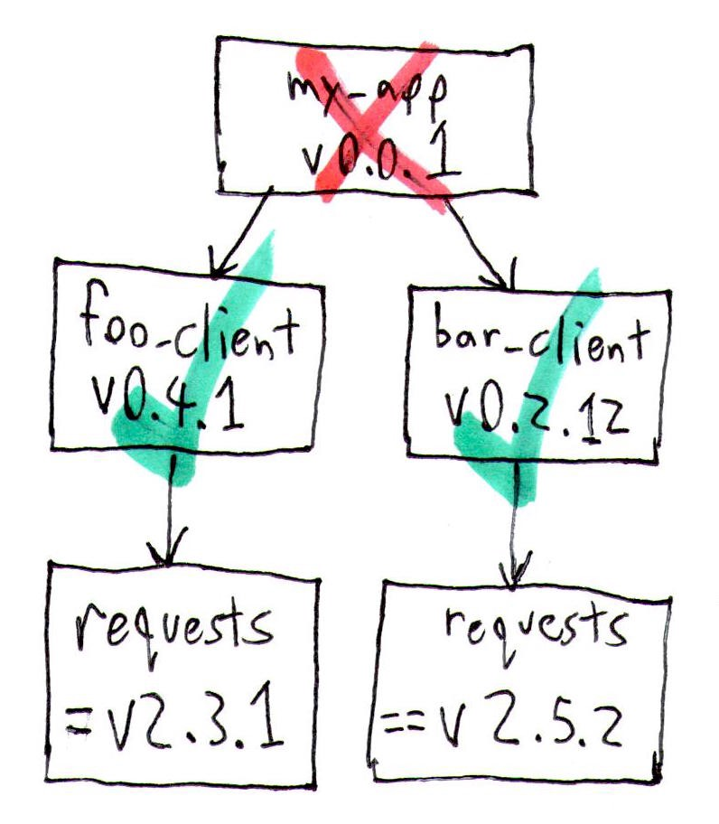

Keyboard shortcuts:
N/СпейсNext Slide
PPrevious Slide
OSlides Overview
ctrl+left clickZoom Element
If you want print version => add '
?print-pdf' at the end of slides URL (remove '#' fragment) and then print.
Like: https://wwwcourses.github.io/...CourseIntro.html?print-pdf
Created for

Iva E. Popova, 2022-2023,

Modules in Python
Modules in Python
Overview
- Modules allows to split a long program into several files
- for instance - to put function/class definitions in one or more files, and the main program to be written in a separate file.
- Each module creates its own namespace.
- A module is a Python file containing definitions and statements.
- Module == Python file
├── my_app
│ ├── app.py # the main file
│ ├── helper_module.py # a module file
Import module: import X
- To use a module, you have to import it first.
- As a module generates its own namespace, you have to prefix the imported names with the module name:
def get_user_name():
return input('Enter your name:')
def greet(user_name):
print(f'Hello, {user_name}!')
# import the helper_module:
import helper_module
# use helper_module
user_name = helper_module.get_user_name()
helper_module.greet(user_name)
Module Execution
- A module can contain executable statements as well as function definitions. Usually these statements are intended to initialize the module.
- Statements in a module are executed only the first time the module name is encountered in an import statement.
- But as a module is just a Python file, we can execute it as a standalone program.
Module alias: import X as Y
import helper_module as hm
user_name = hm.get_user_name()
hm.greet(user_name)
Import object from module: from X import Y
- You can import an object from module, using the
from X import Ynotation. After that, you can use the name (Y), without having to prefixing it. - You can import more that one object, if you separate them with comma
from helper_module import get_user_name, greet
user_name = get_user_name()
greet(user_name)
Import object from module: from X import *
- Imports all objects from a module.
- Not recommended to use it, as a name collision could occurs.
from helper_module import *
user_name = get_user_name()
greet(user_name)
Where import looks for a module?
- The directory containing the input script
- the directories specified in the PYTHONPATH environment variable
- The installation-dependent default.
Python's built-in modules
- or why Python is "Batteries Included"
- Python Module Index
- to use a built-in (standard) module, you have to import it!
Help on Python's built-in modules
- Using the
help('module_name')function provides useful information about a module. - If you want to check all built-in modules, just use
help("modules") - Most modules have defined the
__file__attribute (discussed in next slides), which contain the path where the module is installed
import datetime
print( datetime.__file__)
# /usr/lib/python3.5/datetime.py
Python's third-party modules
- The Python Packaging Index PyPIis a public repository of open source licensed packages made available for use by other Python users.
- We are going to see how to install third-party modules after we get familiar with Python's Virtual Environments
Import-related module attributes
Import-related module attributes/global variables
The __file__ and __name__ variables
- Within a python file we can use the global
__file__and__name__variables. __file__variable contains the pathname of the file from which the module was loaded- When a Python module is imported,
__name__is set to the module’s name, without the .py extension - When a Python module is executed as a standalone script, the
__name__variable is set to '__main__' value
print( "__file__:", __file__)
print( "__name__:", __name__)
python helper_module.py
# __file__: /some/path/helper_module.py
# __name__: __main__
import helper_module
# __file__: /some/path/helper_module.py
# __name__: helper_module
__name__
- When Python interpreter reads a
.pyfile, it executes the code in it! - If a
.pyfile is executed as a module: __name__is set to module's own filename- If a
.pyfile is executed as stand-alone program: __name__is set to"__main__"
__name__ - examples
Create in same directory next Python files:
import helper_module
if __name__ == "__main__":
print("helper_module is executed as stand-alone py file")
else:
print("helper_module is imported as module")
- Run the
main.pyand look at the output - Run the
helper_module.pyand look at the output
__file__
- Stores the full filename (including path) of the file/module being executed
- Will be same, no matter if the file is executed as a stand-alone or as a module.
- If we need to strip the path, and get just the filename,
__file__ - examples
Create in same directory next Python files:
import helper_module
print( "__file__:", __file__)
- Run the
main.pyand look at the output - Run the
helper_module.pyand look at the output
Packages in Python
Packages in Python
Overview
- A Python package is simply a group of Python module(s), usually stored in one directory
- Packages are a way of structuring Python’s module namespace by using “dotted module names”.
make directory a package: __init__.py
- You should put an
__init__.pyfile in the directory, which you want it to be treated as package from Python. __init__.pycan be an empty file- or you can put some initialization code for the package
$ tree my_app
my_app/
├── app.py
└── packA
├── greet.py
├── __init__.py
└── packB
├── get_data.py
└── __init__.py
from python 3.2 __init__.py must be present only in Regular Packages, but can be omitted in Namespace Packages. More info in docs
Importing packages
- You can import a module from a package using the same mechanism as importing a single module. But do not forget - a package makes its namespace, so you must use the dot notation.
- If we have next structure:
- We can import
get_datamodule inappwith:
$ tree my_app
my_app/
├── app.py
└── packA
├── greet.py
├── __init__.py
└── packB
├── get_data.py
└── __init__.py
import packA.packB.get_data
pyc files and __pycahce__ folder
- Python automatically compiles a script to so called byte code, before running it.
- To speed up loading modules, when a module is imported for the first time, or when the source is more recent than the current compiled file, a
.pycfile containing the compiled code will be created. - When you run the program next time, Python uses this file to skip the compilation step.
- Python caches the compiled version of each module in the automatically created __pycache__ directory under the name module.version.pyc
- If you really need to tell python not to generate the compiled versions, you can set the PYTHONDONTWRITEBYTECODE env. var.
Readings
Execute python module from command line
Execute python module from command line
- We can use
python -m module_name from terminal in order to execute a module - Note that since the argument is a module name, you must not give a file extension (.py).
python -m helper_module
# note the difference between:
python3 helper_module.py
PIP - the Python Package Manager
PIP - the Python Package Manager
- Python has a strong community which releases lot's of modules(packages), which you can use for free and focus on "get job done", instead of reinventing the wheel.
- pip is the tool for installing Python packages from PyPI (Python Package Index)
- Note, that if you do not use a Virtual Environment, a package installed by using pip will be installed in your system's python distribution.
pip basic commands
- get help on pip:
- pip help
- install a package from PyPI:
- pip install package_name
- uninstall a package
- pip uninstall package_name
- list installed packages:
- pip list
- upgrade a package:
- pip install --upgrade SomePackage
- show information about installed packages.:
- pip show package_name
- output installed packages in requirements format
- pip freeze
Reference: pip commands
More readings
Python Virtual Environments
Python Virtual Environments
Virtual environment - Why?
- Python apps usually depends on many modules(packages), which depends on other packages, and very often - from a specific version of a package.
- Many system tools also depends on specific versions of installed Python packages.
- You don't want to pollute your system's Python environment or to deal with dependency hell! 
{kind=link}
Virtual environment - What?
- A virtual environment is an isolated Python environment that allows packages to be installed for use by a particular application, rather than being installed system wide
- A virtual environment is a directory tree which contains Python interpreter, libraries and scripts installed into it, and other files which indicate that it is a virtual environment.
- There are many tools for working with virtual environments in Python (virtualenv, pipenv, poetry, conda, etc.)
- Starting with Python 3.4,
venvmodule is the preferred way to create and manage virtual environments. - venv module is included in the Python standard library and requires no additional installation.
Create Virtual Environment
# make sure you are in project folder, where you want to use virtual environment
# create virtual environment with name ".venv"
python3 -m venv .venv
# a folder '.venv' is created in the project folder
.venvis a common name for a virtual environment as it keeps the directory typically hidden in your shell.- Note, that you need to create a virtiual environment per project only once. But each time you work in your project you must activate it.
- In order to install and use python packages in your virtiual env, you must activate it:
- If on PowerShell you receive an error File ... cannot be loaded because running scripts is disabled on this system you must first set the PowerShell execution policies (Set-ExecutionPolicy @microsoft.com):
- You can confirm you’re in the virtual environment by checking the location of your Python interpreter:
- If you want to switch projects or otherwise leave your virtual environment, simply run
# On Windows PowerShell run:
.venv\Scripts\Activate.ps1
# On Windows CommandPrompt run:
.venv\Scripts\activate.bat
# On Windows GitBash run:
source .venv\Scripts\activate
# On Linux, MacOS, run:
source .venv/bin/activate
Set-ExecutionPolicy Unrestricted -Scope Process
# now try again to activate:
.venv\Scripts\Activate.ps1
# On Windows, run:
where python
# On Unix or MacOS, run:
which python
# It should be in the .venv directory
deactivate
References
- Virtual Environments and Packages @python3 tutorial
Installing packages using pip and virtual environments
Installing packages using pip and virtual environments
The steps
# Create virt.env - just once per project
python -m venv .venv
# Activate it - every time you will work on the project:
# On Windows CommandPrompt run:
.venv\Scripts\activate.bat
# On Linux, MacOS, run:
source .venv/bin/activate
# Install module
pip install module_name
Creating Virtual Environments with Different Python Versions for Your Projects using PowerShell
Creating Virtual Environments with Different Python Versions for Your Projects using PowerShell
Prerequisites
- Install the Python versions you want to have in your machine. In next examples I'll be using Python 3.7 and Python 3.8
- Check the checkbox: "Add Python to Path" only for the version you want to be the default. For other Python installations - do not check that checkbox
- Remember the Python Installation locations for later use
Prerequisites
Now, imagine the problem statement is that we have 2 projects that will have to be developed on 2 different Python versions — 3.7 and 3.8. They will have different supported library versions. Thus, our aim is to create 2 virtual environments and install the respective requirements.
Create the 2 project folders in your machine: test_project_37 and test_project_38. We will create a virtual environment with Python 3.7 for the test_project_37 , and Python 3.8 for the other project. They have two different requirements.txt files as well. We put these two text files in the respective project folders.
Create virtual environment
Now let’s move to the first project folder test_project_37 and execute the following command.
PS C:\Users\user\Projects\test_project_37> C:\"Program Files"\Python\Python37\python.exe -m venv venv37
What it does is going to the location where we installed the Python 3.7 and looks for the Python interpreter (python.exe), “copies” it and creates a virtual environment folder called venv37 via the -m venv syntax. This is an important step before installing any libraries into our environment, as it boils down to which library versions the desired Python version supports.
Activate virtual environment
After creating virtual environment, you will see the new folder venv37 created in this project folder. There, once the virtual environment is activated, Python will store all future libraries. Next, we will activate this environment by calling the activate.ps1 file inside the Scripts folder
PS C:\Users\user\ML Projects\test_project_37> venv37\Scripts\activate.ps1
If this is done correctly, you will see the project folder address being suffixed with the virtual environment name in brackets:
(venv37) PS C:\Users\user\ML Projects\test_project_37>
We can check the version of Python by the following command. The version 3.7 must be returned:
(venv37) PS C:\Users\user\ML Projects\test_project_37> python -V
Python 3.7.11
How will the `pip install` behave?
Once we are in a virtual environment, whenever we use pip install to install any library, if we don’t specify the desired version of the library, pip will automatically install the latest version that is compatible with the python version inside the virtual environment
Freezing the dependency versions
Imagine we have done all the work in our local environment and want to create the requirements.txt file for others to use and install on their virtual environment, so that there is no compatibility issue. Besides telling them the python version in use (e.g., 3.7) we need to “freeze” the current package versions and export them to a text file. let’s call it requirements37.txt
(venv37) PS C:\Users\user\ML Projects\test_project_38> python -m pip freeze > requirements38.txt